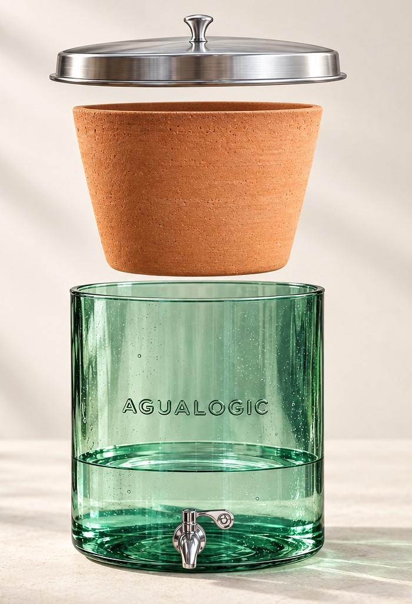

Guía del purificador · 02
Así se cura tu
purificador nuevo
5 cargas y el sabor a arcilla se va
1
Llénalo hasta el tope
Con el agua que quieres purificar. Deja que baje de forma normal.
2
Repite 4 veces
Las primeras cargas pueden saber a arcilla. Es el polvillo del proceso artesanal de la cerámica. Guarda esa agua: es para tus matas.
3
La 5.ª carga ya se toma
Antes, limpia el polvillo que queda en el fondo del recipiente.

El agua de curación no se pierde: riega tus matas. Cada gota se aprovecha mientras tu purificador queda listo.
En resumen
4 cargaspara curar el purificador nuevo
5.ª cargaya se puede consumir
100%del agua se reutiliza: riega tus plantas
Si dejas de usarlo varios días y la cerámica se seca, el sabor a arcilla puede volver. Repite la curación.
Primeras semanas: mantén la cerámica llena. El peso del agua abre los poros y el purificador trabaja al ritmo normal.
Pasos del instructivo de instalación y mantenimiento de AguaLogic. La cerámica es de fabricación artesanal, por eso suelta un polvillo en las primeras cargas.
Pureza Natural · Distribuidor autorizado AguaLogic